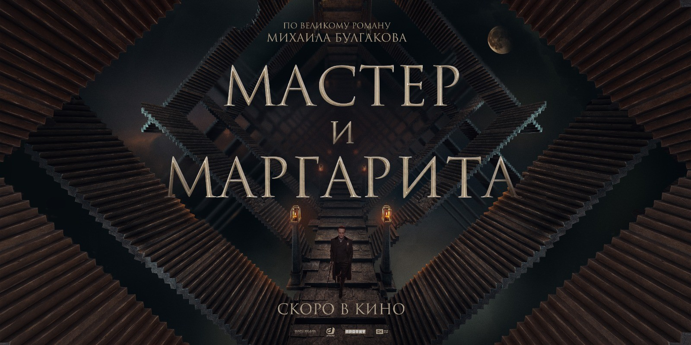
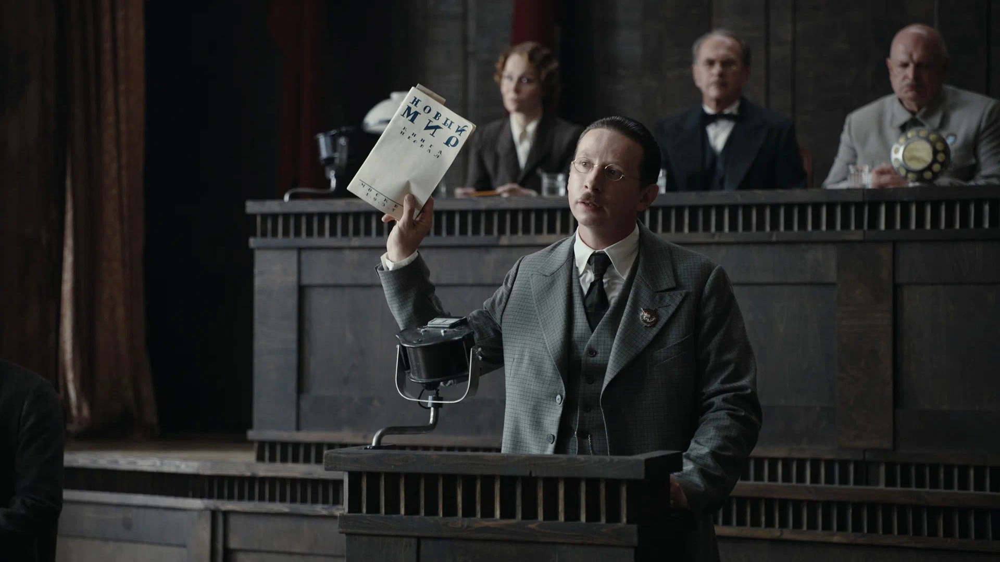
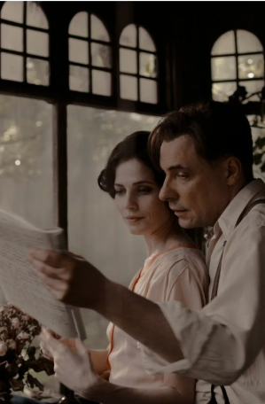
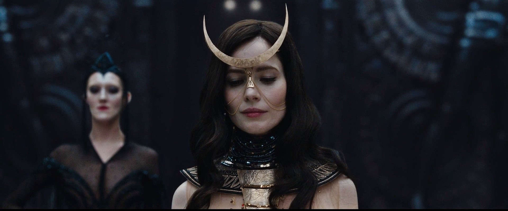

Экранизации
Москва, 1930-е годы. Популярный драматург обвиняется в антисоветчине: спектакль по его пьесе отменяют, а самого его выгоняют из союза литераторов. В не самый лучший момент своей жизни он встречает глубоко несчастную в браке красавицу Маргариту и начинает новый роман, героями которого становятся люди из его окружения, в том числе — мистический персонаж Воланд, списанный со знакомого иностранца.
 «В основе нашего сценария лежит роман Булгакова “Мастер и Маргарита”, но авторам удалось создать свой уникальный мир, который заслуживает оригинального названия, поэтому и родился “Воланд”», — объясняла продюсер Наталия Клибанова.
Состав актеров: В главных ролях снялись известные российские актеры, включая Данилу Козловского в роли Мастера и Марию Кожевникову в роли Маргариты.
- Режиссер: Виктория Соловьёва
- Сценарий: Виктория Соловьёва,
на основе романа Булгакова - Премьера: 15 марта 2024 года
- Жанр: Фэнтези, драма
- Страна: Россия
Долгий путь к экранизации: Проект был в разработке более
10 лет,
и множество версий сценария не дошли до съемок.
Музыка: Саундтрек к фильму включает оригинальные композиции, а также переосмысленные классические произведения.
Специальные эффекты: Для визуализации магических сцен и персонажей использовались новейшие технологии компьютерной графики.